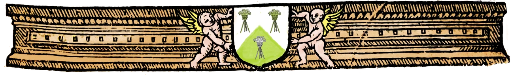

The Dodechedron (sic) of Fortune began in France as Le Dodechedron de Fortune (also printed under the fuller title Le Plaisant Jeu du Dodechedron de Fortune), first published in Paris in 1556. It is traditionally credited to the poet Jean de Meun (c. 1240–c. 1305), best remembered for completing the Roman de la Rose; though he had been dead two and a half centuries by the time the book appeared, and modern scholars treat the attribution with some skepticism.
An English translation followed: The Dodechedron of Fortune; or, The Exercise of a Quick Wit, “Englished by Sr. W. B., Knight”, whose identity remains unknown. It was printed in London in 1613 by John Pindley, for H. Hooper and S. Man.
The book appears to be an early modern parlor game. Its 144 questions are sorted into twelve astrological “houses,” and a twelve-sided die — a dodecahedron, hence the title — is cast to carry you from your question to one of twelve possible verse answers, for 1,728 possible fortunes in all.
The fortunes in the book are listed on pages that each feature a "magic" name. These may have originally been names of stars, but in the English version of the book they are pretty thoroughly turned into gibberish. Still, this app shows you what they are, after the page and verse number of your fortune.
The Dodechedron of Fortune app is a Progressive Web App (PWA); a website that can be used directly from your browser, or set up on your phone to behave like an app. To do this, open the app URL https://litlnemo.github.io/dodechedron-of-fortune/ in Safari (iPhone) or Chrome (Android), then use Share → Add to Home Screen (iOS) or the Install app option (Android).
This digital edition draws on:
Please note that the language used here is drawn directly from the 1613 edition of the book. The spellings are as they were in the book, as is all word usage. Some words have different meanings now than they did then, and some text may be difficult to understand, either because of spellings, archaic meanings, or general fortune-telling vagueness. No offense is ever meant by anything included here.
App design, graphic design, and artwork (adapted from period book title-page woodcuts) by Wendi Dunlap.
Body and display type (when app is in "Period" mode) set in IM Fell English, Igino Marini's digital revival of the Fell typeface cut by the Dutch typefounder Christoffel van Dijck, acquired by John Fell, Bishop of Oxford, in the 1670s, and bequeathed to Oxford University Press in 1686.
The software Affinity was used for graphic creation and editing.
